There is something about vintage Christmas decor that feels warmer than anything new off the shelf.
Mercury glass, bottle brush trees, old Santa figurines, velvet, and plaid all do something a brand-new ornament set cannot quite manage.
Getting the look does not require hunting down actual antiques.
A few well-chosen new pieces, styled with a little restraint, read just as nostalgic as anything passed down from a grandparent.
This roundup covers every room, not just the tree, mantels, kitchens, staircases, bedrooms, even gift wrap, because a truly vintage-feeling Christmas usually shows up in the small details as much as the big ones.
Here are 33 ways to borrow the look, whether you are decorating a whole house or just want to update one shelf this year.

1. Cover a Pastel Fridge in Vintage Santa Magnets
A mint green refrigerator becomes the whole display here.
Dozens of Santa, snowman, and reindeer magnets climb across both doors, stacked tight enough that barely any fridge shows through.
Bottle brush trees in pink, yellow, and teal line the counters on either side, with a black and white checkerboard floor underneath.
Start in the center and work outward so the magnets end up clustered rather than scattered in a grid.
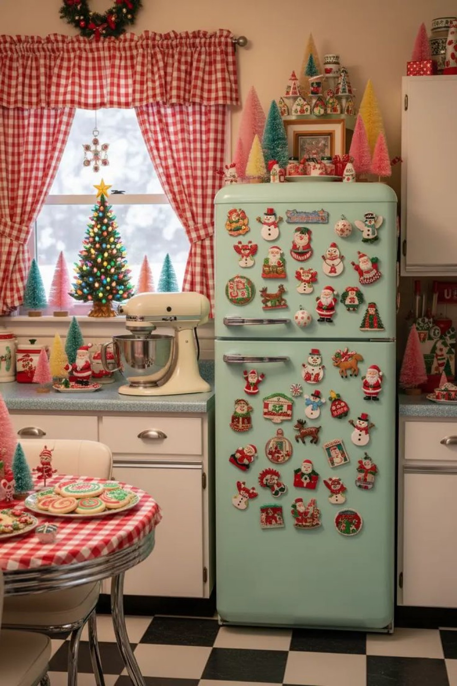
2. Drape Dried Orange Slices Down a Staircase Garland
Garland along a staircase gets a warmer, more old-fashioned feel with dried citrus mixed in.
Pine and holly wind down the banister here, with dried orange rounds, dusty rose velvet ribbon, and pinecones tucked at intervals, string lights woven underneath.
Space the orange slices unevenly along the garland rather than at perfectly matched intervals.
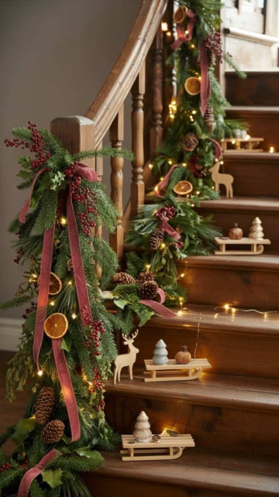
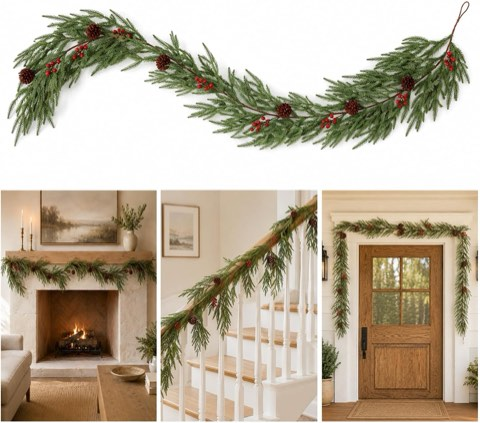
Norfolk Pine Christmas Garland for Mantle, 6 Ft, with Pinecones and Berries
Shop on Amazon3. Trim a Tree in Muted Mercury Glass
Modern glass ornaments have a hard, bright shine.
Mercury glass does not.
Cream, silver, and burgundy balls and teardrop finials hang here, their silvering worn enough to scatter light instead of reflecting it cleanly.
A strand of silver tinsel garland winds through the branches, with a framed piece of art and a softly lit mantel just visible behind the tree.
Mix ball shapes with a few teardrop or finial ornaments so the tree reads as collected over years, not bought in one box.
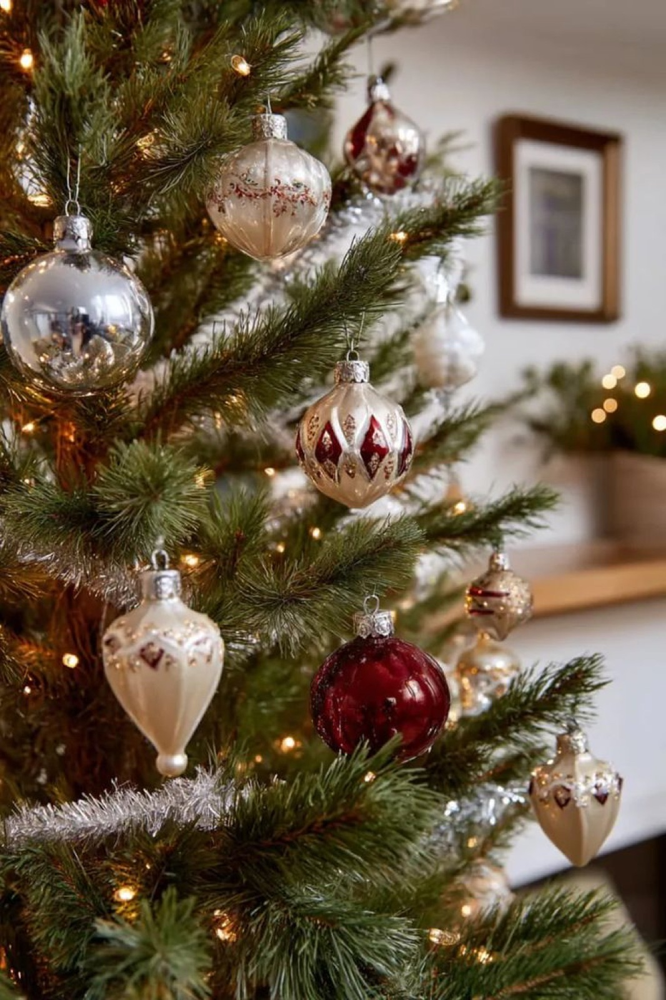
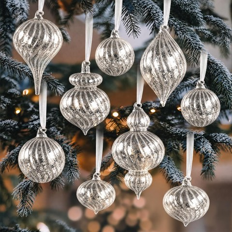
Vintage Silver Mercury Glass Christmas Ornaments, Assorted Shapes, 9 Pcs
Shop on Amazon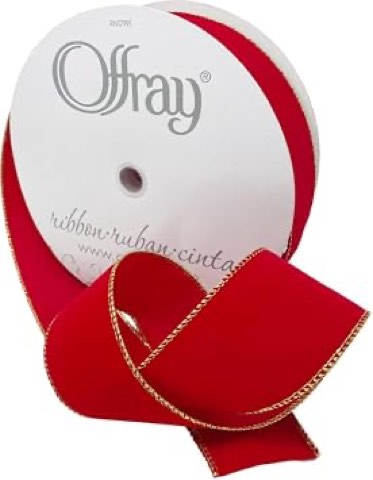
Wired Traditional Red with Gold Edges Velvet Christmas Ribbon, 2.5 in, 50 Yards
Shop on Amazon4. Fill Vintage Tins and Mugs with Mini Ornaments
This one skips the tree entirely and turns tabletop containers into the display.
A round tin printed Christmas and a pair of retro mugs reading Merry Christmas and Ho Ho Ho are stacked with small ball ornaments in dusty pink, teal, and gold.
A tiny tabletop tree strung with gingerbread-shaped ornaments sits just behind them, with string lights draped along a cabinet in the background.
Raid a kitchen cabinet for mismatched mugs and tins first. The display works better imperfectly matched than coordinated.
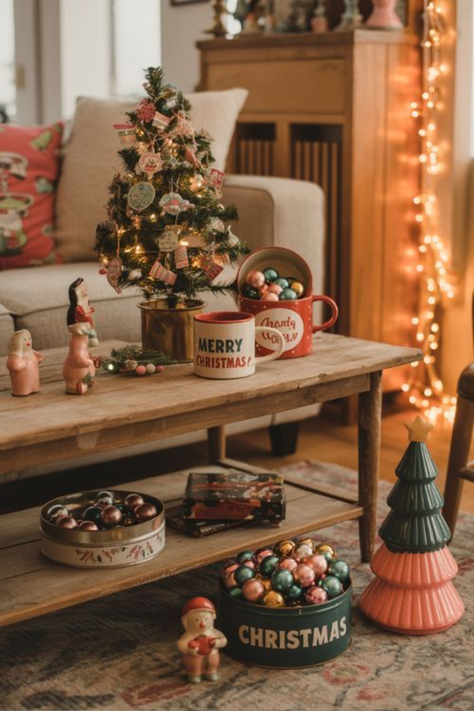
5. Lean a Vintage Sled Against the Front Door
A weathered wood sled with a dark metal frame does the job of a wreath here, propped right beside the entry instead of hung on it.
Frosted pine, pinecones, and clustered red berries are tied to the top with an oversized red velvet bow, a stone wall and a flocked potted tree framing the scene.
Let the greenery trail naturally down the sled's slats instead of binding it into a tight bundle.
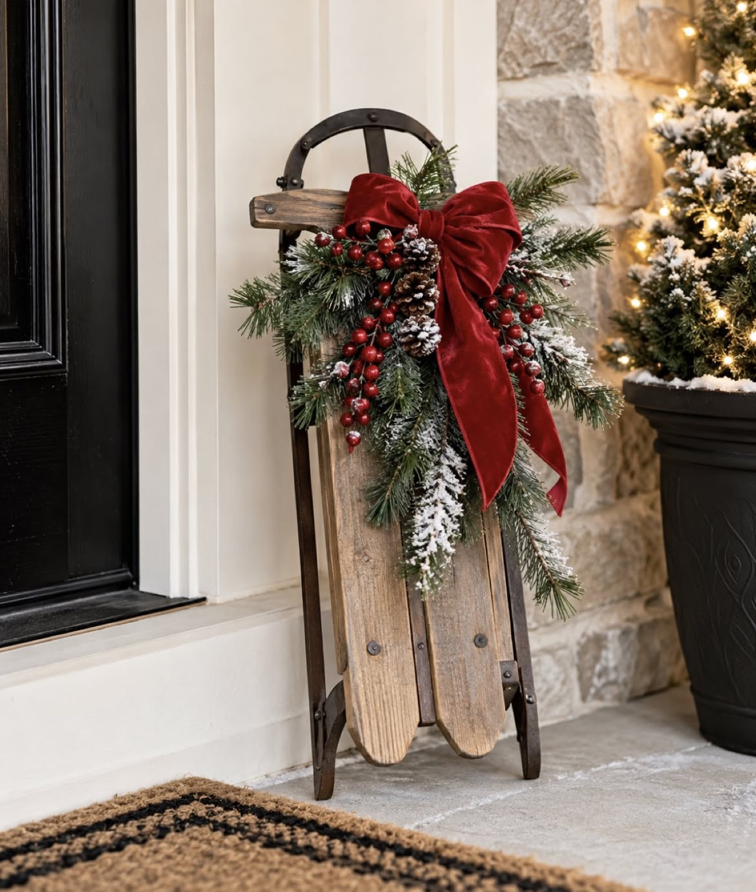

Set of 3 Wired Red Velvet Christmas Bows
Shop on Amazon6. Drape Cedar Across the Top of an Arched Mirror
A tall gold-framed mirror gets a soft, swagged treatment instead of a full wrap.
Cedar garland rests across the ornate scrollwork at the top only.
A burgundy ribbon bow and long tails are left hanging down over the glass itself, rather than tucked to one side.
The mirror reflects a bright, modern living room behind it, which keeps the look from feeling too heavy.
Let the ribbon tails hang unevenly in length. Perfectly matched tails read as store-bought.
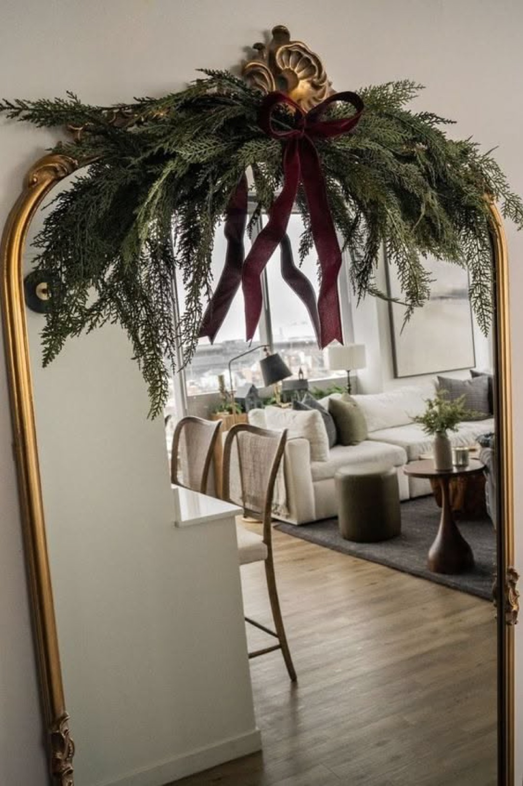
2 Pack 6FT Artificial Pine Christmas Garland with Red Berries and Pine Cones
Shop on Amazon7. Cluster Bottle Brush Trees on a Cake Stand
A ceramic pedestal stand usually meant for dessert works just as well for a mantel of tiny trees.
Trees in cream, deep green, and red stand at different heights here, with miniature glass ball ornaments scattered around their base and a red plaid bow tied around the stand's neck.
It sits on a farmhouse table next to an old rolling pin and a buffalo check runner.
Vary the tree heights by at least a few inches each. A flat, even cluster loses the display's charm.
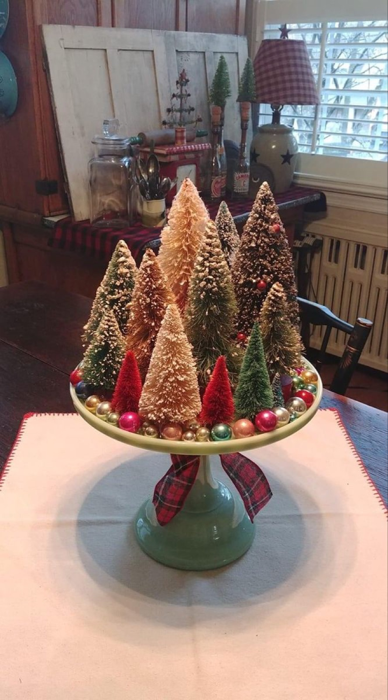
8. Hang a Wood Christmas Sign Above the Mantel
A hand-lettered Christmas sign, framed in reclaimed wood, anchors this entire mantel from above.
Garland studded with red ball ornaments and flocked bottle brush trees runs the length of the shelf below it, with embroidered stockings hanging down over a brick fireplace surround and small wreaths on either side of the sign.
Center the sign first, then build the garland out from underneath it rather than the other way around.
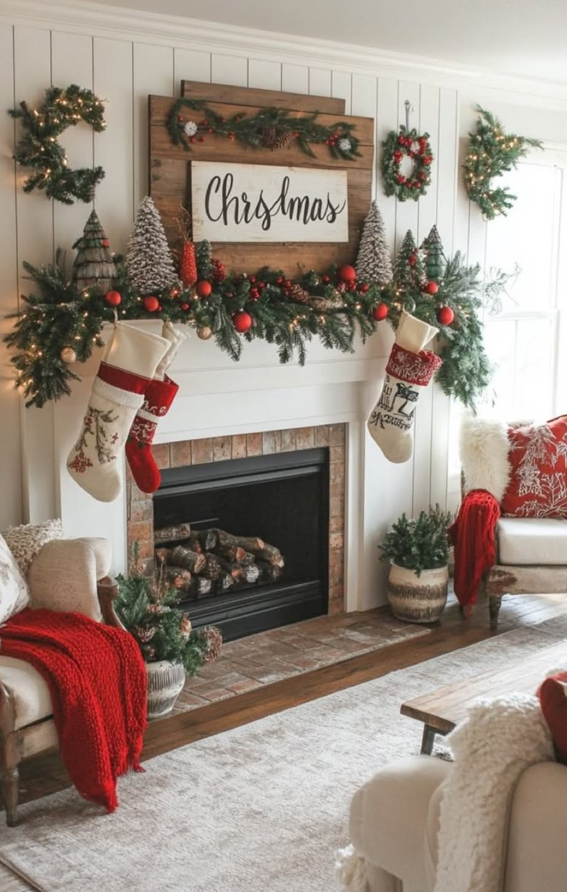
PineSpark 9ft Flocked Pre-Lit Christmas Garland with Lights
Shop on Amazon9. Fill a Glass Lantern with Ornaments and Fairy Lights
An oversized glass-paned lantern becomes its own ornament display instead of just holding a candle.
Red, gold, and green ball ornaments are piled inside.
A tangle of warm fairy lights fills the gaps between them, the glow visible through every pane of glass.
It sits on a snow-dusted porch step at dusk, with a frosted pine branch just outside the frame.
Use ornaments without hooks so they sit loose at the bottom rather than hanging and blocking the light.
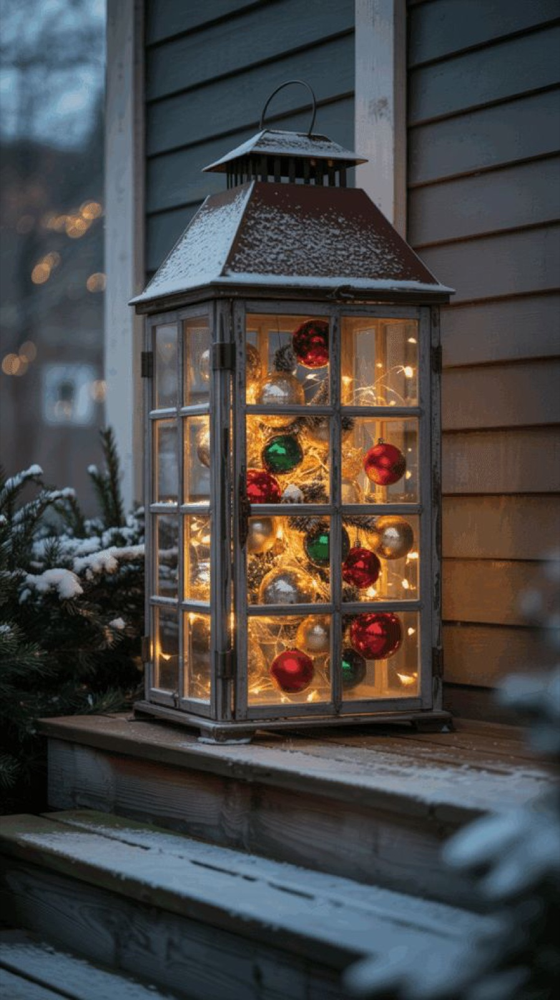
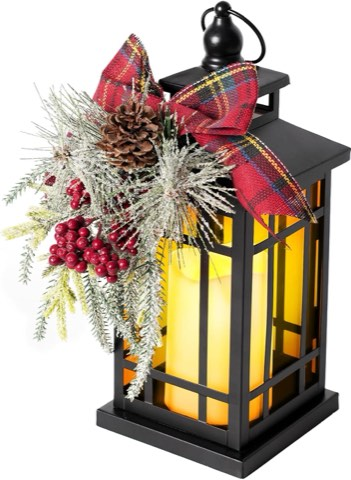
N&T NIETING 14 Inch Metal Vintage Lantern with LED Light, Battery Powered
Shop on Amazon
10. Monogram Velvet Stockings in Jewel Tones
Three stockings here skip matching red and white entirely.
Burgundy, deep green, and navy velvet, each with a cream cuff and a hand-embroidered monogram, hang from a gilded mantel with small ornament charms dangling from their loops.
Fairy lights and garland fill the space behind them without competing for attention.
Pick one jewel tone per stocking rather than matching the whole set. The variation is what makes it feel personal.
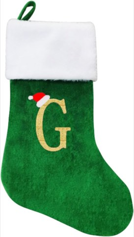
Prettybuy 19 Inch Personalized Monogram Christmas Stocking, Green Velvet
Shop on Amazon11. Build a Christmas Village Along a Window Ledge
Natural daylight does a lot of the work in this display.
Dozens of lit ceramic houses in cream, red, and brown sit in deep faux snow on a dark wood console under a tall window, with snow-flocked trees of varying heights and a scattering of tiny figures.
Place the tallest houses toward the back and the smallest figures up front so the scene reads with real depth.
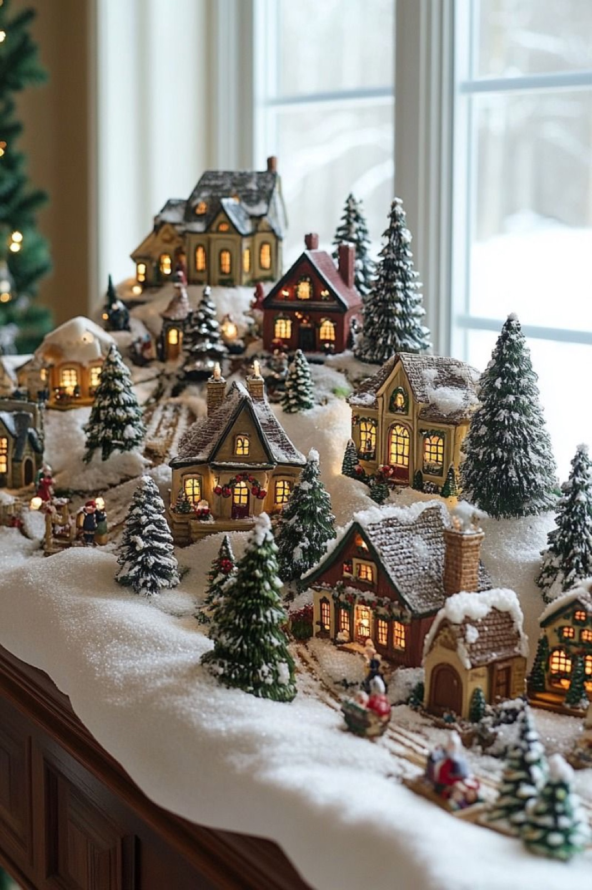
30 Pcs Mini Bottle Brush Christmas Trees with Wood Base
Shop on Amazon12. Wrap Gifts in Kraft Paper and Frayed Velvet Ribbon
Plain kraft paper gets a vintage finish almost entirely from the ribbon and the small objects tied on top.
Deep red velvet ribbon with a raw, frayed edge crosses each box here.
A cinnamon stick, a few star anise pods, a gingerbread house cookie tag, or a candy cane gets tucked under the bow, one small object per gift.
Fresh pine sprigs and holly berries fill the gaps between packages on a dark wood surface.
Choose one small object per gift rather than piling several on. A single cinnamon stick reads as intentional.
13. Mix Finishes on a Classic Ornament Tree
A tree that leans fully into classic Christmas color does not need every ornament to match.
Red, green, teal, and gold balls hang here in a mix of glossy, matte, ribbed, and glitter finishes, with warm multicolor string lights tucked deep into the branches rather than draped over the top.
A wreath hangs on a glass-paned door in the soft, out-of-focus background.
Push the lights in toward the trunk before adding ornaments. That inner glow is what reads as nostalgic in photographs.
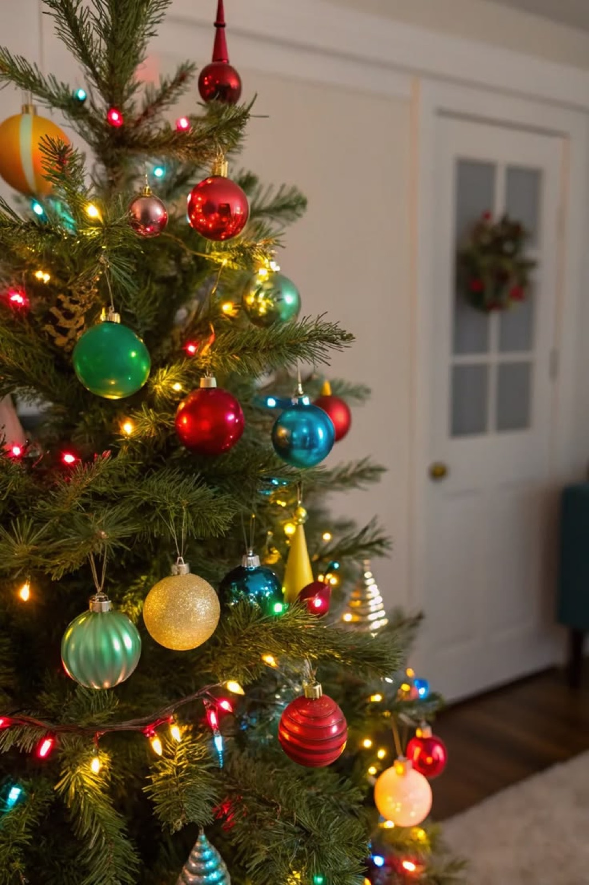
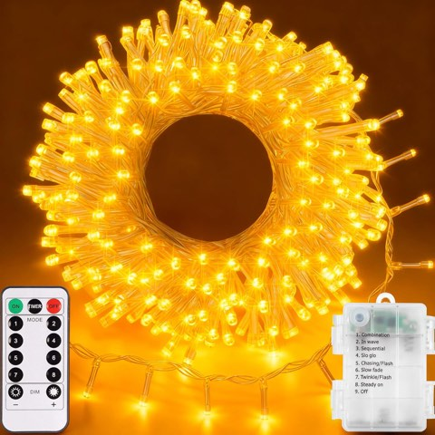
echosari 33Ft 100 LED Battery Powered String Lights with Remote, Warm White
Shop on Amazon14. Line Up Handmade Village Houses on a Windowsill
These houses look less like a manufactured set and more like something collected piece by piece.
A row of small wood houses, painted in navy and barn red with hand-painted windows, sits along a radiator shelf under frosted, decal-covered windowpanes, tealight candles tucked between them and fairy lights outlining the frame.
Leave gaps of different widths between the houses rather than spacing them evenly. It reads as a real street, not a product shelf.
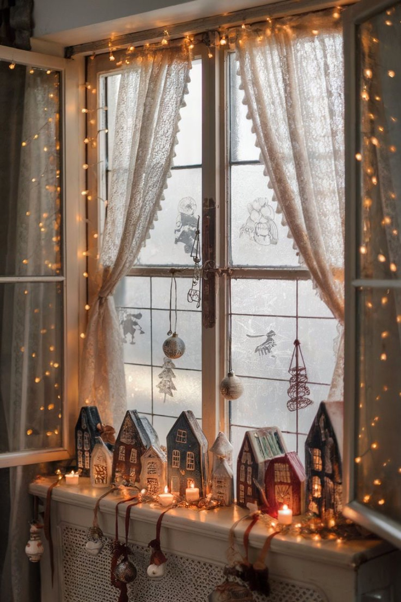
echosari 33Ft 100 LED Battery Powered String Lights with Remote, Warm White
Shop on Amazon15. Wrap a Full Mirror Frame in Garland and Gold Ribbon
Unlike a swag across the top, this garland wraps the entire rectangular frame, corner to corner.
Cedar and pine cover the gold frame completely.
A champagne ribbon is woven through, along with clusters of red berries and fairy lights tucked into the greenery.
Oversized red and silver glittered ball ornaments sit loose on the dresser below, next to candles in brass holders.
Wrap the garland in one continuous piece around the frame instead of four separate swags. The unbroken line is what makes it look finished.
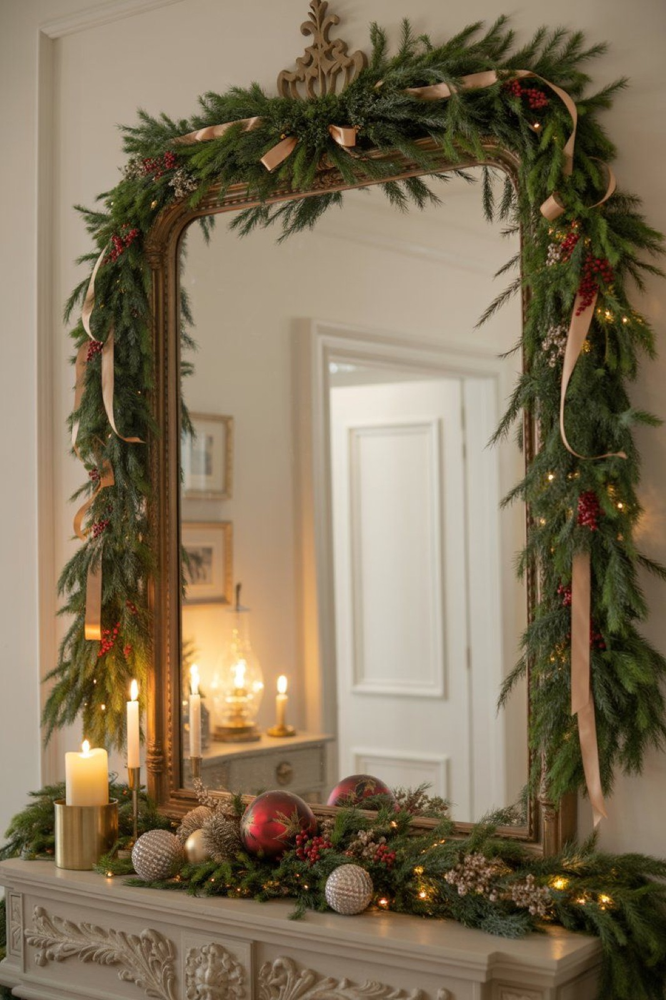

16. Clip Antique Postcards to a Mantel Garland
A plain twine line does more here than any ribbon could.
Reproduction postcards, a snowy cottage scene, a Christmas tree with red ornaments, hang from small wooden clothespins along a strand of twine strung across a rustic mantel shelf, a sprig of pine tucked in at one end.
A lit tree glows softly out of focus just behind it.
Hang the cards at slightly different heights along the line instead of perfectly level. It reads as collected, not printed as a matched set.
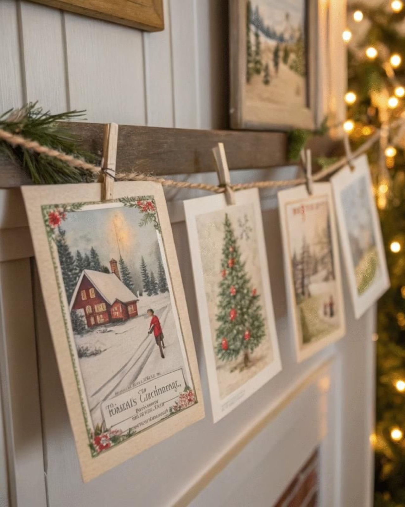
17. Set a Table in Tartan Plaid and Gold
Plaid does not have to stay on pillows and stockings.
A green and red tartan tablecloth covers the whole table here, with matching napkins tied in gold twine, gold-rimmed stemware, and gold flatware laid against the pattern, a lit tree glowing just visible through the glassware.
Keep the rest of the place setting in solid gold or cream. A second pattern next to the plaid competes instead of complementing it.
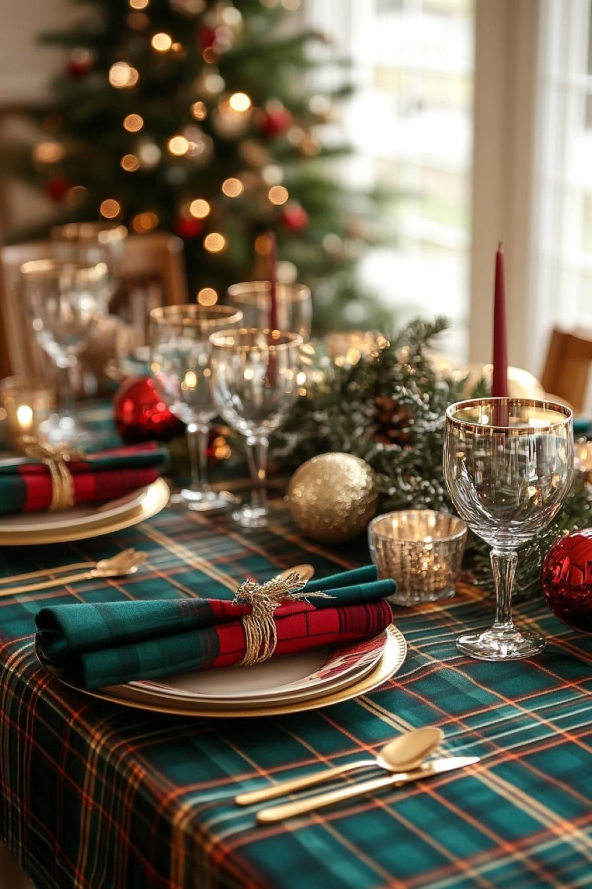

18. Add Caroling Figures to a Tabletop Village
A tabletop village feels like more of a scene when it has people in it, not just buildings.
Lit houses, a church with a steeple, and a general store sit in deep faux snow on a rustic wood table.
Tiny carolers, a Santa and sleigh figure, and a small footbridge are tucked between the buildings.
A lit tree stands at the center of the display, string lights woven through the whole scene.
Add the human figures last, after the buildings and trees are placed. They are what turns a model display into a storybook one.
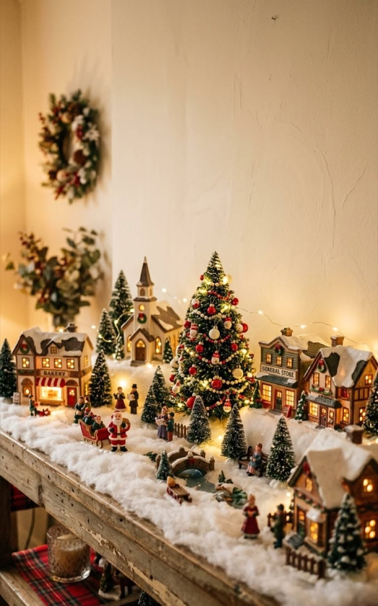
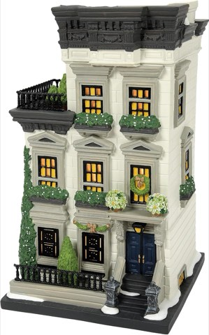
Department 56 Christmas in the City 87 West 56th Street Town House, Lit
Shop on Amazon19. Turn a Bookcase Shelf into a Christmas Display
A chippy, distressed white bookcase holds this entire vignette across four shelves.
Vintage children's Christmas books, a tin of peppermint candies, a Santa snow globe, bottle brush trees, and a small light-up ceramic tree with a star topper fill the shelves, alongside old greeting cards propped open.
A real Christmas tree glows through a doorway to the side, its lights visible past the shelf's edge.
Let a few books lean instead of standing perfectly upright. A slightly imperfect stack feels lived-in rather than staged.
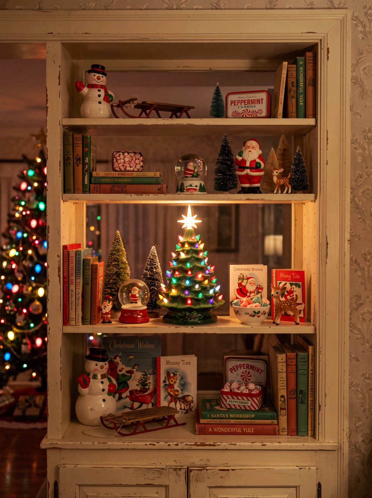


20. Knot Rustic Bells into a Garland with Jute Rope
Three weathered bronze bells, graduated from large to small, hang here on a single length of jute rope, knotted directly into a fresh pine and cedar garland draped over a carved wood mantel corner.
Nothing else competes with the bells. The greenery stays plain everywhere else along this stretch.
Knot the rope at slightly uneven lengths so the bells do not line up in a perfectly straight row.
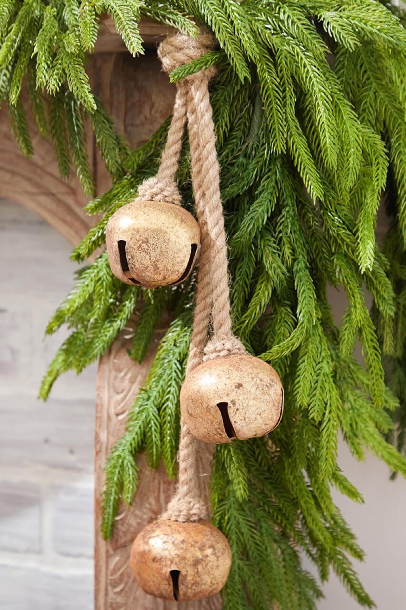
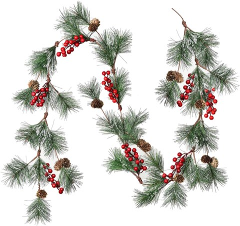
Artiflr 6 Feet Christmas Pine Garland with Berries and Frosted Pinecones
Shop on Amazon21. Light Tall Taper Candles in Brass Candlesticks
A gilt-framed mirror doubles the candlelight here instead of just reflecting the room.
Tall brass candlesticks hold dark taper candles on a white arched marble mantel.
Cedar garland and deep burgundy berries drape along the edge, with an arched fireplace opening just below.
The mirror catches both the real flames and their reflection, which is what makes the whole corner glow.
Choose candlesticks with some height variation. Identical heights flatten the reflection instead of layering it.
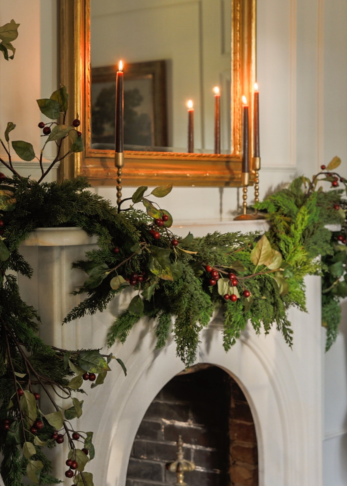
22. Cluster Mismatched Crystal Glasses Down a Tartan Table
No two glasses at this table setting match exactly.
A blue and navy tartan tablecloth holds a cluster of crystal stemware in different shapes and sizes, gold-rimmed charger plates, navy linen napkins, and an amber glass votive.
A tall window behind the table looks out over a garden lawn, with a lit tree glowing to one side.
Group three or four different glass shapes at each place setting instead of one matching set. It is what makes the table look gathered over time.
Gold Rim Stemless Crystal Wine Glasses, Set of 6, 18 oz
Shop on AmazonChristmas Cotton Tablecloth, Red Tartan Plaid, 60 x 120 Inch
Shop on Amazon23. Rest a Dressed Sled Just Inside the Front Door
This sled stays indoors, leaned against an entryway wall instead of outside the door.
Pine greenery and a red velvet bow hang from the top, three small brass bells tied on, while a woven basket of birch logs and pinecones sits at its base, kraft-paper wrapped gifts and a mini potted tree filling out the corner.
Let the basket of logs sit slightly in front of the sled rather than beside it, so the two pieces read as one grouped vignette.
YK Decor Wood Sleigh Hanging Christmas Decoration, 10x19 Inch
Shop on AmazonRustic Metal Cow Bells Set, 4 Hanging Bells with Jute Rope
Shop on Amazon24. Plant Bottle Brush Trees in Old Stoneware Crocks
Every tree in this collection gets its own container instead of sharing a single tray.
Trees in green, teal, cream, and gold stand at different heights.
Each one is rooted in a vintage stoneware crock, several printed with old advertising labels like Dundee Orange Marmalade.
A few of the shorter trees carry tiny ball ornaments; the tallest ones stay bare.
Mix labeled crocks with plain ones. A full set of matching containers makes the collection look purchased instead of gathered.
Farmhouse Sweet Brown on Cream Ceramic Stoneware Crock, 9 x 6
Shop on AmazonLOVEINUSA 40 Pack Mini Bottle Brush Christmas Trees, 5 Sizes
Shop on Amazon25. Style Open Kitchen Shelves in Red and White
Mint green cabinets get their holiday color almost entirely from what sits on the shelves above them.
Red and white vintage-style bowls, canisters, and a ceramic Santa head line two open shelves, with a garland of ball ornaments strung along the shelf edge and gingham tea towels on the counter below.
A red stand mixer and a small tabletop tree finish the counter, with candy canes standing in a vase nearby.
Pick one or two colors for all the kitchenware and let the garland be the only green. Too many colors on open shelves reads as cluttered fast.
JarThenaAMCS 3 Pcs Christmas Glass Storage Jars, Red White Candy Cane
Shop on AmazonNative Fab Gingham Check Kitchen Towels, 4 Pack, Red Green White
Shop on Amazon26. Run Dried Orange Slices Down a Floral Table Setting
Vintage floral china carries most of the vintage feeling at this table, not the centerpiece.
A holly-pattern plate set, burgundy linen napkins tied with ribbon, and brass candlesticks with white tapers sit against a lace-edged cloth, dried orange slices and pinecones running down the center like a loose runner.
Lay the orange slices and pinecones directly on the tablecloth rather than in a container. The looseness is what sells the look.
Bicuzat Vintage Floral Ceramic Plates, Set of 4, 8 Inch
Shop on AmazonLiliful 60 Pcs Dried Orange Slices, Pine Cones and Cinnamon Sticks
Shop on Amazon27. Line a Staircase with Lanterns Instead of Just Lights
A grand curved staircase gets its glow from candlelit lanterns on nearly every step, not string lights.
Brass and glass lanterns holding flameless candles line the stairs.
Garland cascades down the banister with dried orange slices, eucalyptus, and pinecones.
A burgundy and gold velvet ribbon bow marks the newel post, with a lit tree, wrapped gifts, and a basket of folded blankets at the base of the stairs.
Place one lantern per step rather than clustering them. Spaced evenly, they read as a real lit pathway.
N&T NIETING 14 Inch Metal Vintage Lantern with LED Light, Battery Powered
Shop on AmazonAOLHXY 9FT Snow Flocked Christmas Garland, Mountain Pine
Shop on Amazon28. Fill a Wooden Dough Bowl with Mercury Glass Ornaments
A dough bowl meant for bread does centerpiece duty here instead.
Mercury glass ornaments in silver, green, and burgundy fill the bowl, with tiny vintage Santa and reindeer figurines tucked between them and pine sprigs and pinecones ringing the edge.
It sits on a coffee table in front of a lit tree and a working fireplace, with a lit candle placed just beside it.
Tuck the small figurines in after the ornaments are arranged, not before. They read better nestled into gaps than placed first.
FANDOS Wooden Dough Bowl for Decor, 17.75 Inch Hand Carved
Shop on AmazonVintage Silver Mercury Glass Christmas Ornaments, Assorted Shapes, 9 Pcs
Shop on Amazon29. Stand Nutcrackers Guard on a Carved Marble Mantel
Two wooden nutcracker figures, one holding a candy cane, stand sentry on this mantel instead of sitting among the greenery.
White pillar candles, red ball ornaments, and pine with red berries fill in around them, plaid ribbon trailing down the carved marble front and a gilt mirror behind reflecting a second, smaller lit tree.
Place the nutcrackers at slightly different distances from the mirror. Identical placement makes the reflection look doubled instead of layered.
SurpriseSeptember 4 Pcs Traditional Wooden Nutcracker Soldiers, 12 Inch
Shop on AmazonUnscented White Pillar Candles, 6 Pack, Dripless and Smokeless
Shop on Amazon30. Stack Wooden Crates and Fill Them with Ornaments
Stacked produce crates make an uneven, staggered base that a flat table cannot give you.
Oversized red and gold ball ornaments fill the gaps between pinecones and small live pine trees.
Red berries tuck into whatever space is left.
The whole arrangement sits on a snow-dusted porch, the staggered heights meaning no two crates show the exact same grouping.
Overfill at least one crate until ornaments spill slightly over the edge. A perfectly contained crate looks too tidy next to the others.
Extra Large Christmas Wooden Crate Set of 2, Holly Jolly Farmhouse
Shop on Amazon31. Bring a Mini Lit Village into the Bedroom
Christmas decor does not have to stop at the living room door.
A small lit ceramic village house and a cluster of bottle brush trees sit on a wood dresser beside a bed layered in floral and buffalo check pillows and a red crocheted throw.
A wreath and framed art hang on the wall above, with a second lit tree visible near the window.
Keep the village small enough to leave room on the dresser for everyday items. An oversized display stops feeling like part of the room.
CARRIE HOME Red Christmas Tartan Plaid Pillow Covers, Set of 2, 18x18
Shop on AmazonDepartment 56 Christmas in the City 87 West 56th Street Town House, Lit
Shop on Amazon32. Hang a Jingle Bell Wreath from an Arched Mirror
This wreath is made entirely of bells, no greenery in its own ring.
A gold jingle bell wreath hangs by a cord from the top of an arched mirror already draped in eucalyptus and cedar, small gold bells clustered along the garland's edge and golden bead-textured bottle brush trees on the console below.
Hang the bell wreath slightly off-center in the mirror rather than dead center. It keeps the eye moving instead of landing in one spot.

Bottle Brush Christmas Trees, 5 Sizes, with Snow and Wooden Base
Shop on Amazon33. Display a Santa and Snowman Figurine Collection on Crates
This is less a display than an actual collection, gathered one piece at a time.
Dozens of vintage-style Santa and snowman figurines, in varied sizes, finishes, and poses, cover tiered wooden crates.
White lace doilies drape under each tier.
Oversized glass ball ornaments, candy canes, a single lit brass candlestick, and a strand of gold tinsel garland with fairy lights woven through fill in the rest.
Group figurines by size on each tier rather than mixing large and small randomly. It keeps a collection this big from looking chaotic.
Unscented White Pillar Candles, 6 Pack, Dripless and Smokeless
Shop on AmazonPick Your Starting Point
Thirty-three ideas is a lot to take in at once.
You do not need to recreate all of them.
Pick two or three that match the rooms you actually spend time in, and build out from there.
If this style is new to you, start with one classic piece, a mercury glass ornament, a bottle brush tree, or a vintage-style mug, and let the rest follow its lead.
The vintage look works best when it feels collected over time rather than perfectly matched, mixing eras, finishes, and colors is part of what makes it feel real.
Whatever you borrow, the goal is a home that feels warm and familiar the moment you walk in.